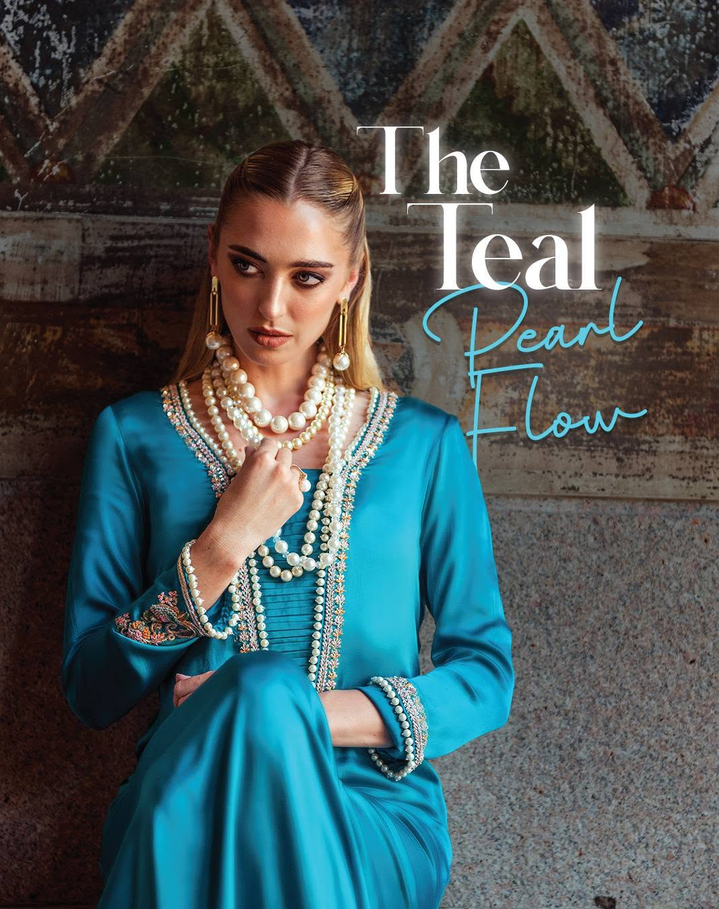
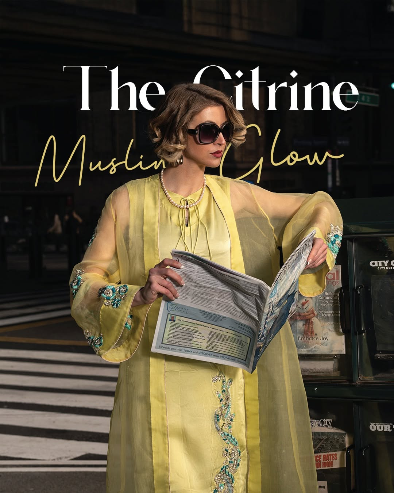
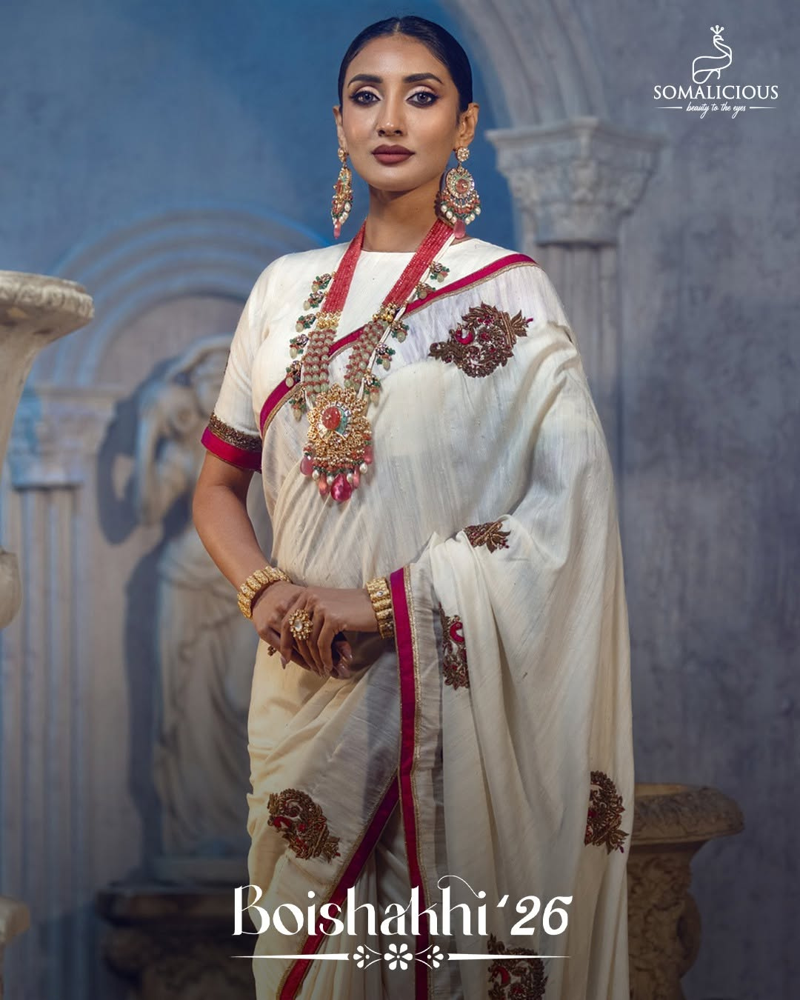
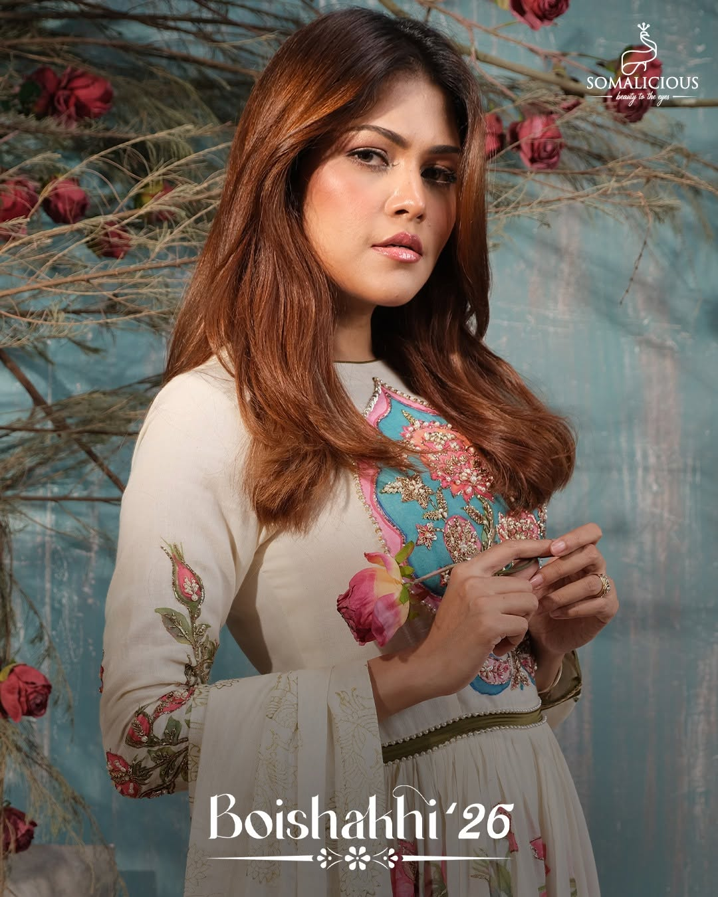
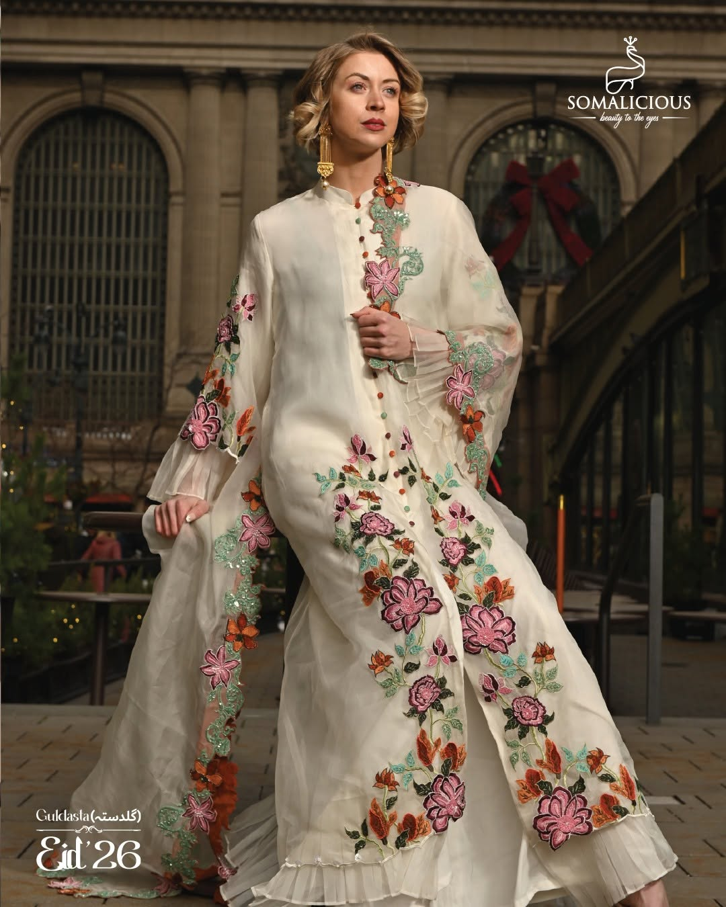
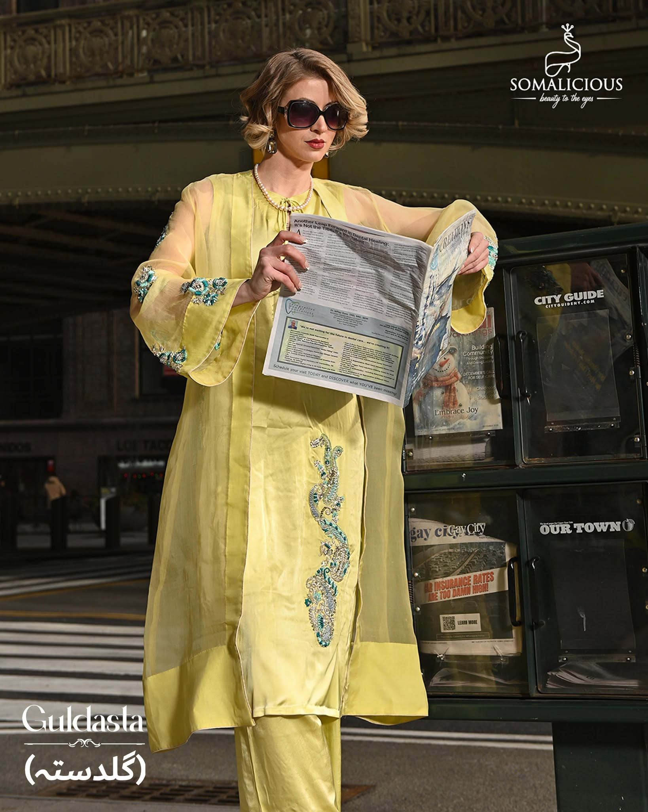

End-to-end creative content production for a Dhaka luxury fashion brand, from brand copywriting and storyboarding to social video scripts and photography direction.






Somalicious, a hand-crafted fashion brand positioning itself as "where style meets comfort", needed to establish a premium brand identity on social media that felt genuinely luxurious without alienating the brand's accessible, design-forward audience.
The challenge: luxury fashion content in Bangladesh often defaults to either Western aesthetic pastiche or generic product photography. Somalicious needed content that felt distinctly its own, editorial, aspirational, and culturally resonant, to justify premium pricing against a crowded fast-fashion market.
Built the content strategy around Somalicious's core tension: handcraft meets contemporary style. This "made carefully, worn confidently" narrative became the throughline across every content format.
Client managed organic distribution, analytics not shared publicly.